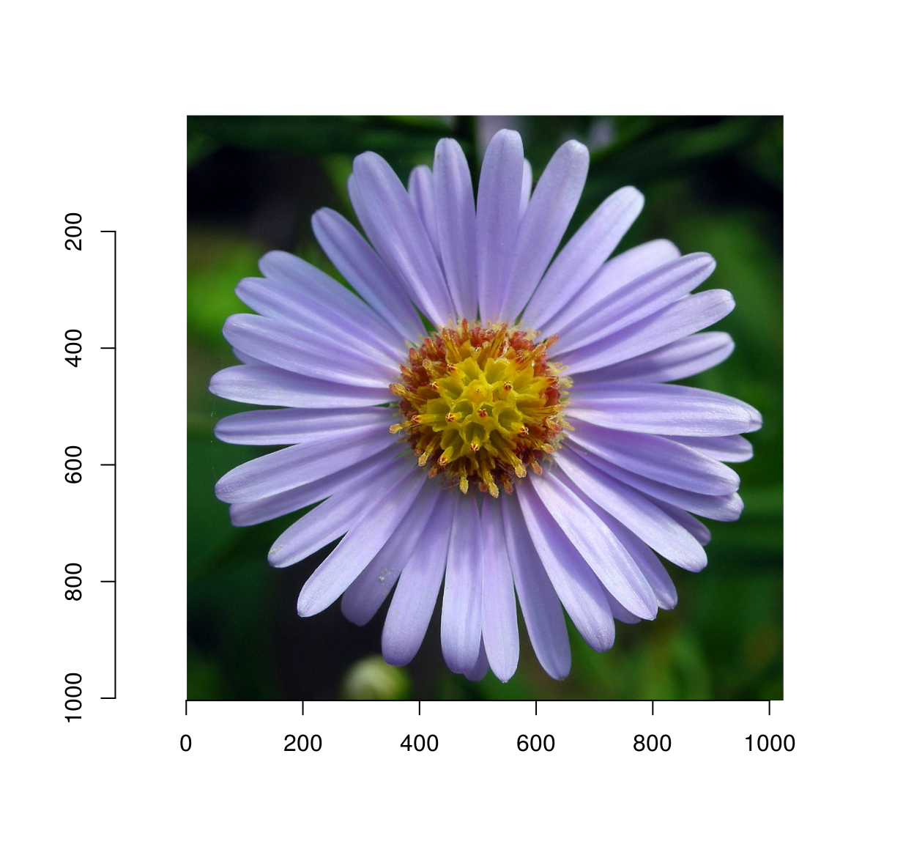
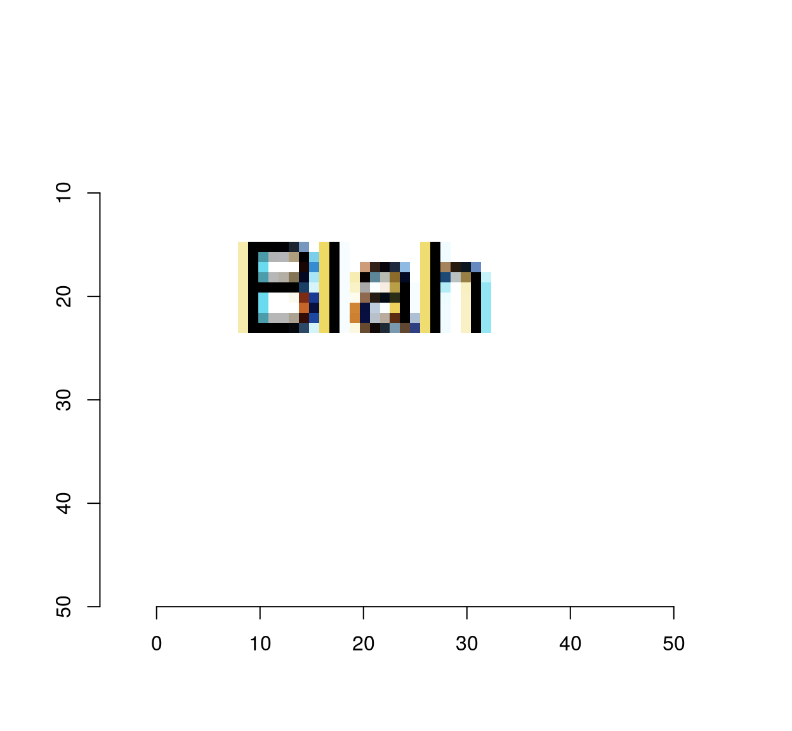
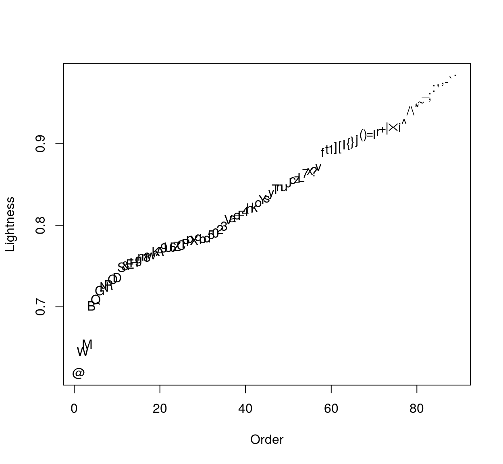
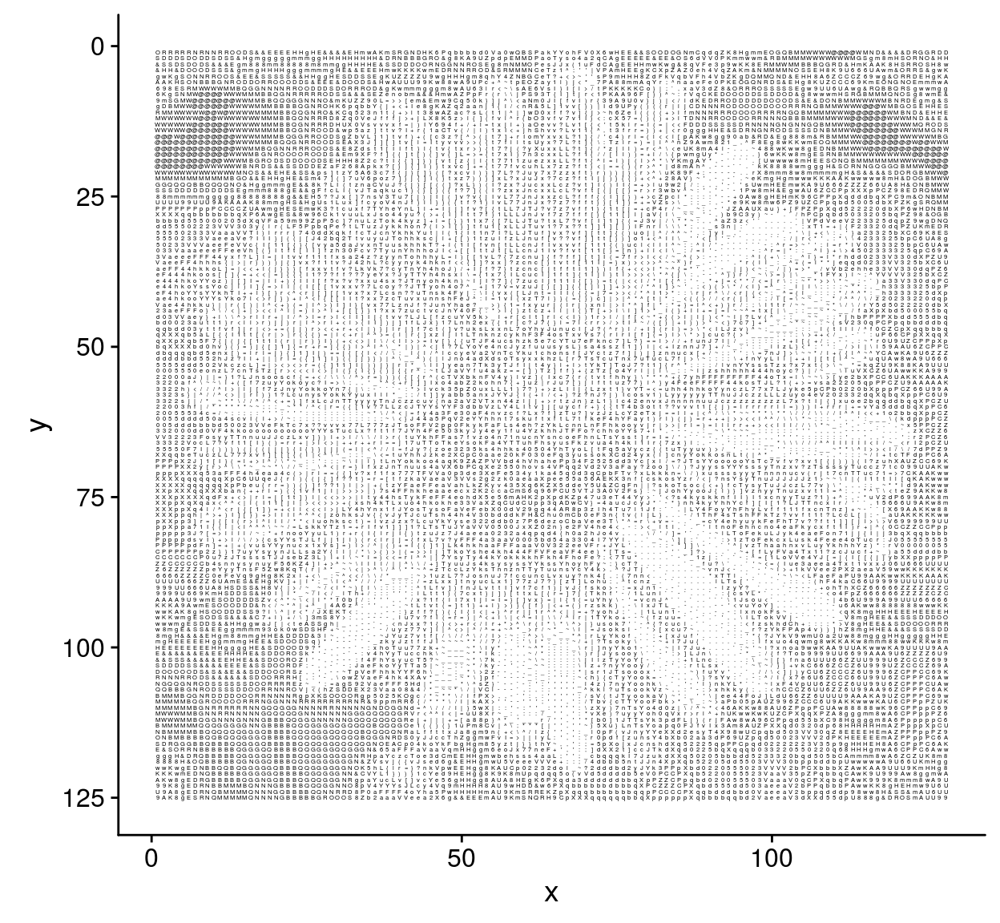
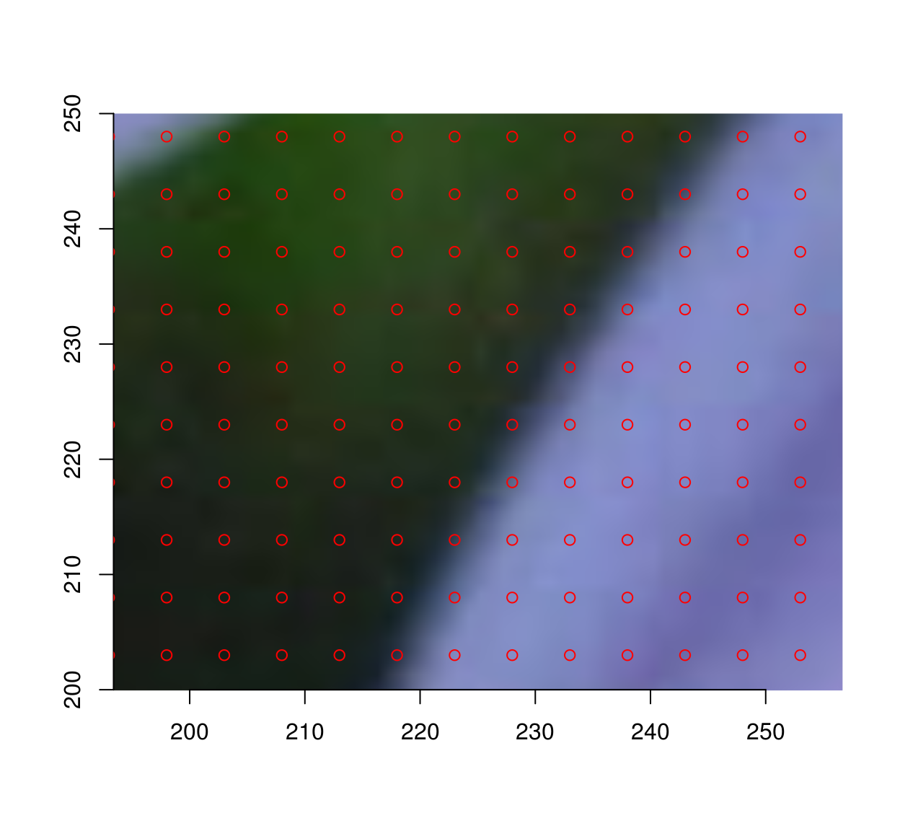
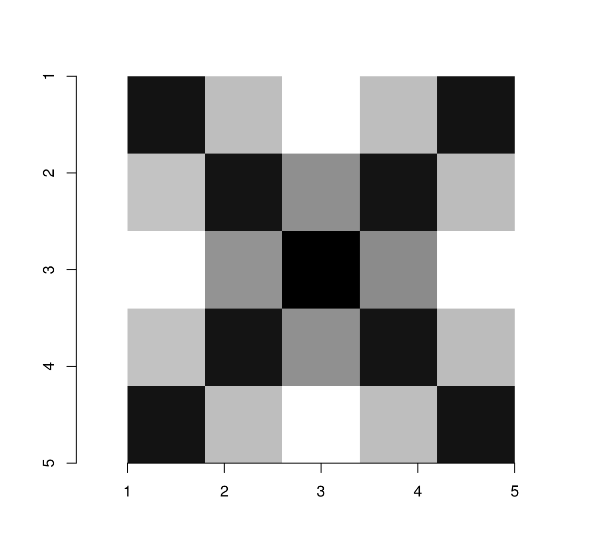
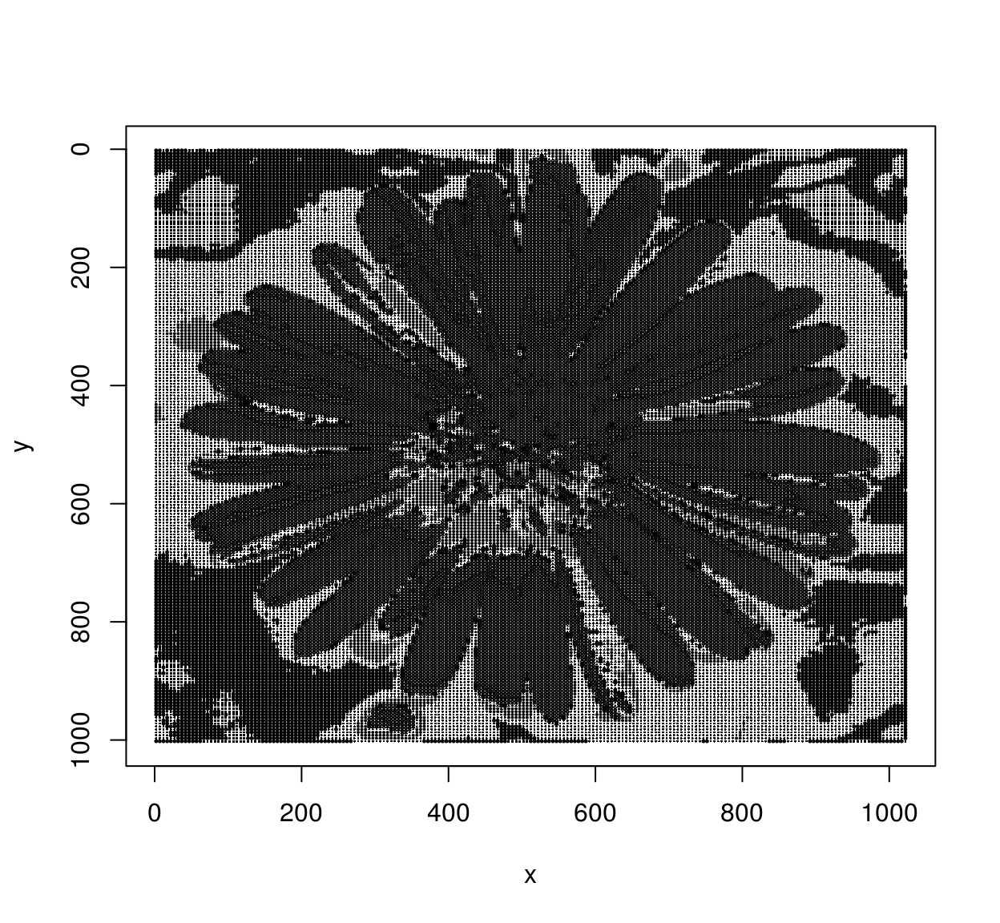
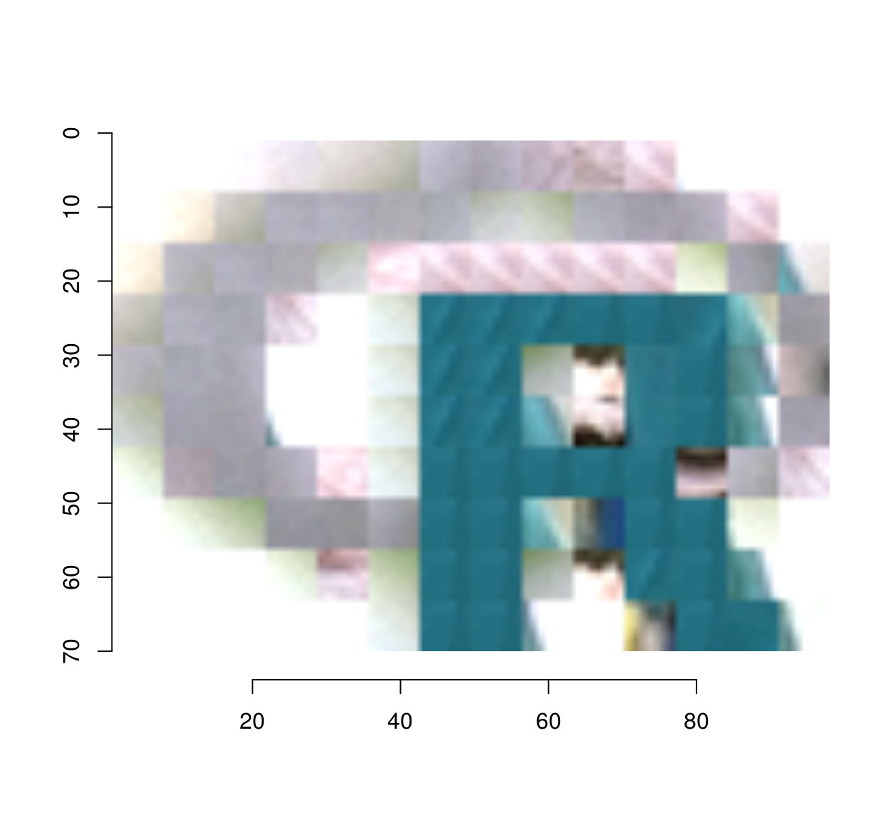

ASCII art is the art of drawing pictures using text (specifically, the 128 characters allowed by standard ASCII). In this example we’ll see how to use imager to render pictures into ASCII, in the manner of image-to-ASCII converters like AAlib.
We’ll be using imager and tools from the tidyverse, and an image of a flower as an example:
##The tidyverse package loads dplyr, purrr, etc.
library(tidyverse)
library(imager)
##Optional: cowplot has nicer defaults for ggplot
library(cowplot) ## Warning: `legend.margin` must be specified using `margin()`. For the old
## behavior use legend.spacingim <- load.image("https://upload.wikimedia.org/wikipedia/commons/thumb/f/fd/Aster_Tataricus.JPG/1024px-Aster_Tataricus.JPG")
plot(im)
The first strategy we’ll explore is to render pixels as characters, using darker characters for darker pixels.
First, we generate a set of ASCII characters:
asc <- gtools::chr(38:126) #We use a subset of ASCII, R doesn't render the rest
head(asc,10)## [1] "&" "'" "(" ")" "*" "+" "," "-" "." "/"Next, we measure how dark these characters by having R draw them on an image, then by computing the average image lightness: for this we use imager’s implot function, which uses R base graphics to plot things on images.
#Draw some text on a white background:
txt <- imfill(50,50,val=1) %>% implot(text(20,20,"Blah"))
txt## Image. Width: 50 pix Height: 50 pix Depth: 1 Colour channels: 3plot(txt,interp=FALSE)
##A function that plots a single character and measures its lightness
g.chr <- function(chr) implot(imfill(50,50,val=1),text(25,25,chr,cex=5)) %>% grayscale %>% mean
g <- map_dbl(asc,g.chr)
n <- length(g)
plot(1:n,sort(g),type="n",xlab="Order",ylab="Lightness")
text(1:n,sort(g),asc[order(g)])
The plot shows the characters on an axis of increasing lightness. To render the image we’ll quantise the grayscale levels into as many bins as we have characters, and plot the result:
#Sort the characters by increasing lightness
char <- asc[order(g)]
#Convert image to grayscale, resize, convert to data.frame
d <- grayscale(im) %>% imresize(.1) %>% as.data.frame
#Quantise
d <- mutate(d,qv=cut_number(value,n) %>% as.integer)
#Assign a character to each quantised level
d <- mutate(d,char=char[qv])
#Plot
ggplot(d,aes(x,y))+geom_text(aes(label=char),size=1)+scale_y_reverse()
So far we have matched pixels to characters based on their average lightness. We could go on to match image patches to characters, finding the character that is most similar to each image patch. The following piece of code implements this idea, but, for a change, instead of ASCII characters we’ll use R’s set of plotting symbols.
The first step is to divide the image into patches:
#psize is the patch size in pixels (we'll use odd patch sizes for simplicity)
psize <- 5
#center of the patch
cen <- ceiling(psize/2)
#produces a grid of coordinates for the center of each patch
gr <- grayscale(im) %>% pixel.grid %>%
filter((x %% psize)==cen,(y %% psize) == cen)
plot(im,xlim=c(200,250),ylim=c(200,250))
with(gr,points(x,y,cex=1,col="red"))
#extract an image patch at each point on the grid
ptch <- extract_patches(im,gr$x,gr$y,psize,psize)
#NB: ptch is an image list, in which each element is an image patch
ptch## Image list of size 41205The second step is to render all characters as image patches of the same size:
syms <- 1:25
render <- function(sym) implot(imfill(psize,psize,val=1),points(cen,cen,pch=sym,cex=1)) %>% grayscale
ptch.c <- map(syms,render)
plot(ptch.c[[4]],interp=FALSE)
Of course at that resolution the rendering of each letter is bound to be pretty crummy (the above is supposed to be “A”).
The third step is to match each image patch to the character it most resembles. For that we’ll use the excellent nearest neighbour function from the nabor package:
#Convert patches to a long matrix
Pim <- map(ptch,as.vector) %>% do.call(rbind,.)
Pc <- map(ptch.c,as.vector) %>% do.call(rbind,.)
nn <- nabor::knn(Pc,Pim,1)$nn.idx
mutate(gr,sym=syms[nn]) %$% plot(x,y,pch=sym,cex=.2,ylim=c(height(im),1))
I’ll admit, this isn’t the prettiest flower, but there you go. Feel free to improve.
For the reader’s entertainment, I’m adding a last piece of code along the same lines: it reconstructs an image using a collection of patches (for instance, patches extracted from another image).
##Extract patches of a given size
extract.all <- function(im,psize=5)
{
cen <- ceiling(psize/2)
gr <- pixel.grid(R(im)) %>% filter((x %% psize)==cen,(y %% psize) == cen)
extract_patches(im,gr$x,gr$y,psize,psize)
}
match.patches <- function(dict,im)
{
psize <- height(dict[[1]]) #Patches are assumed to be square
##Resize to make sure the image can be cut into an integer number of patches
im <- resize(im,(width(im) %/% psize)*psize,(height(im) %/% psize)*psize)
pim <- extract.all(im,psize)
Pa <- map(dict,as.vector) %>% do.call(rbind,.)
Pb <- map(pim,as.vector) %>% do.call(rbind,.)
nn <- nabor::knn(Pa,Pb,1)$nn.idx %>% c
imappend(dict[nn],"x") %>% imsplit("x",-width(im)) %>% imappend("y")
}
##Render the R logo using image patches extracted from the "parrots" image
dict <- load.example("parrots") %>% extract.all(7)
im <- imager::load.image("https://cran.r-project.org/Rlogo.jpg")
match.patches(dict,im) %>% plot
##Render "tennis" as ASCII art
render <- function(chr) implot(imfill(psize,psize,val=1),text(cen,cen,chr,cex=.8)) %>% grayscale
tennis <- load.example("tennis")/255
dict <- map_il(asc,render)
tennis.asc <- imsplit(tennis,"z") %>% map(~ match.patches(dict,.)) %>% imappend("z")